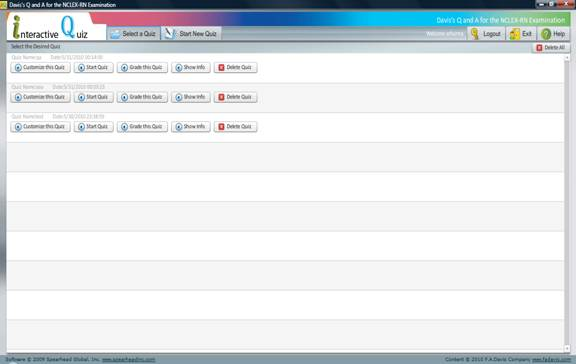
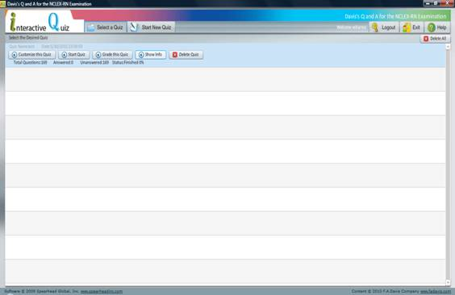
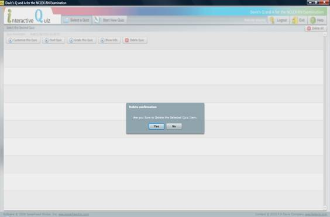
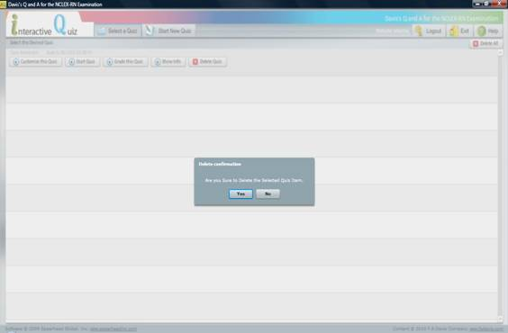

Select a Quiz Page

Clicking the Select a Quiz option from anywhere within the application will display a list of the quiz you have completed thus far. The Select a Quiz page will appear blank if you have not attempted any quizzes.
Each quiz you have attempted will be identified by the name of the quiz as well as the date and time it was attempted. You will be give the following 5 options for each quiz:
· Customize this Quiz
· Start Quiz
· Grade this Quiz
· Show Info
· Delete Quiz
Clicking Customize this Quiz will direct you to the Start New Quiz page and allow you to again choose the quiz criteria.
Clicking Start Quiz will allow you to begin a new attempt using the same quiz criteria previously used.
Clicking the Grade This Quiz button will display the scoring report for the attempt.
Clicking the Show Info button will display the following information related to the quiz attempt:
· Total Questions
· Answered
· Unanswered
· Status

Clicking Delete Quiz will remove the record of the selected quiz attempt. You will be prompted to confirm whether or not you wish to delete this information. Clicking Yes will delete the information.

You also have the option to delete all of the information regarding your attempts by clicking the Delete All button in the top-right corner of your screen. You will be asked to confirm whether or not you wish to delete all of this information. Clicking Yes will delete all of the stored records.

If there are no quizzes currently stored, the Delete All button will be disabled.